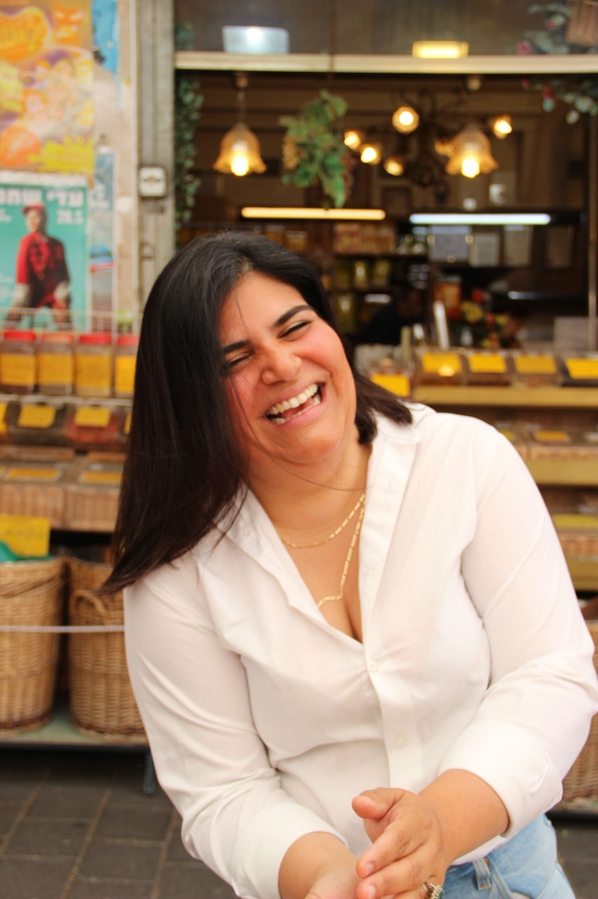

סיור חוויתי בשוק לוינסקי בראי האיורוודה והרפואה הפרסית
סיור צמחי מרפא בלוינסקי הוא סיור חוויתי, מנגיש ומחבר רפואה עתיקה לחיי היום יום. הסיור בראי הרפואות המסורתיות - ההודית והפרסית.
בסיור נלמד איך צמחי המרפא שלכולנו יש בבית, התבלינים, יכולים לתמוך בגוף ובנפש - בעייפות, נפיחות, כאב, עצירויות, בעיות עיכול, קשיי שינה, מערכת חיסונית חלשה, עור הפנים ואפילו במצב הרוח.
מה בסיור?
מוגשת חליטה איורוודית, נשנושים וערכת התנסות ראשונית.
מוגשת חליטה איורוודית, נשנושים וערכת התנסות ראשונית.
הצוות שלנו:
הסיור מועבר על ידי רותם רבינוביץ וענבל הנסב, מטפלות מוסמכות ברפואה הודית, איורוודה.
הסיור מועבר על ידי רותם רבינוביץ וענבל הנסב, מטפלות מוסמכות ברפואה הודית, איורוודה.